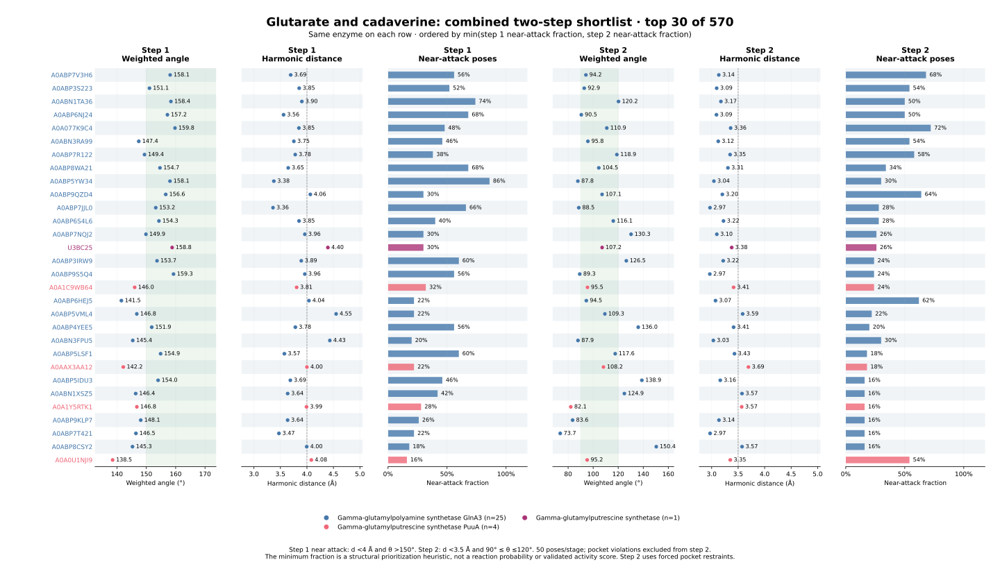
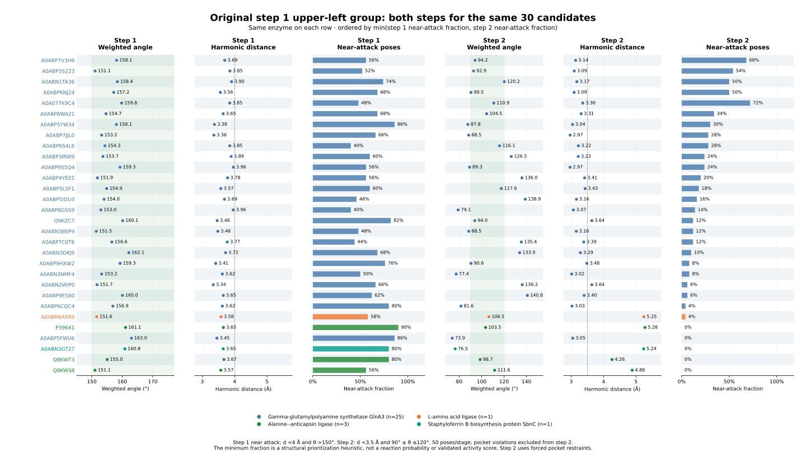

All 570 candidates completed both stages, with 50 poses per stage. The main shortlist now considers both stages.
Order: minimum of the two near-attack pose fractions, descending; ties use step 1 fraction, step 2 fraction, then accession. This heuristic emphasizes the weaker stage. It is not a reaction probability, and activity comparisons across families remain uncalibrated. Weighted angles and harmonic distances are also shown for each stage. Step 2 angles are evaluated against 90–120°; larger is not always better.

Main figure PDF · Main figure PNG · Top-candidate data · All candidates · Actual model-input substrate recheck
| two_step_geometry_rank | accession | family | reaction | step1_plot_weighted_angle_deg | step1_plot_harmonic_distance_A | step1_near_attack_fraction | step2_plot_weighted_angle_deg | step2_plot_harmonic_distance_A | step2_near_attack_fraction | two_step_min_fraction |
|---|---|---|---|---|---|---|---|---|---|---|
| 1 | A0ABP7V3H6 | Gamma-glutamylpolyamine synthetase GlnA3 | rxn05123 | 158.123 | 3.694 | 0.560 | 94.207 | 3.135 | 0.680 | 0.560 |
| 2 | A0ABP3S223 | Gamma-glutamylpolyamine synthetase GlnA3 | rxn05123 | 151.080 | 3.854 | 0.520 | 92.863 | 3.095 | 0.540 | 0.520 |
| 3 | A0ABN1TA36 | Gamma-glutamylpolyamine synthetase GlnA3 | rxn05123 | 158.386 | 3.905 | 0.740 | 120.228 | 3.175 | 0.500 | 0.500 |
| 4 | A0ABP6NJ24 | Gamma-glutamylpolyamine synthetase GlnA3 | rxn05123 | 157.192 | 3.559 | 0.680 | 90.538 | 3.091 | 0.500 | 0.500 |
| 5 | A0A077K9C4 | Gamma-glutamylpolyamine synthetase GlnA3 | rxn05123 | 159.773 | 3.849 | 0.480 | 110.887 | 3.358 | 0.720 | 0.480 |
| 6 | A0ABN3RA99 | Gamma-glutamylpolyamine synthetase GlnA3 | rxn05123 | 147.428 | 3.753 | 0.460 | 95.806 | 3.125 | 0.540 | 0.460 |
| 7 | A0ABP7R122 | Gamma-glutamylpolyamine synthetase GlnA3 | rxn05123 | 149.389 | 3.779 | 0.380 | 118.936 | 3.348 | 0.580 | 0.380 |
| 8 | A0ABP8WA21 | Gamma-glutamylpolyamine synthetase GlnA3 | rxn05123 | 154.652 | 3.647 | 0.680 | 104.504 | 3.307 | 0.340 | 0.340 |
| 9 | A0ABP5YW34 | Gamma-glutamylpolyamine synthetase GlnA3 | rxn05123 | 158.064 | 3.376 | 0.860 | 87.787 | 3.043 | 0.300 | 0.300 |
| 10 | A0ABP9QZD4 | Gamma-glutamylpolyamine synthetase GlnA3 | rxn05123 | 156.615 | 4.064 | 0.300 | 107.119 | 3.202 | 0.640 | 0.300 |
| 11 | A0ABP7JJL0 | Gamma-glutamylpolyamine synthetase GlnA3 | rxn05123 | 153.219 | 3.360 | 0.660 | 88.513 | 2.969 | 0.280 | 0.280 |
| 12 | A0ABP6S4L6 | Gamma-glutamylpolyamine synthetase GlnA3 | rxn05123 | 154.303 | 3.851 | 0.400 | 116.055 | 3.223 | 0.280 | 0.280 |
| 13 | A0ABP7NQJ2 | Gamma-glutamylpolyamine synthetase GlnA3 | rxn05123 | 149.873 | 3.960 | 0.300 | 130.279 | 3.097 | 0.260 | 0.260 |
| 14 | U3BC25 | Gamma-glutamylputrescine synthetase | rxn05123 | 158.801 | 4.395 | 0.300 | 107.152 | 3.378 | 0.260 | 0.260 |
| 15 | A0ABP3IRW9 | Gamma-glutamylpolyamine synthetase GlnA3 | rxn05123 | 153.651 | 3.893 | 0.600 | 126.470 | 3.218 | 0.240 | 0.240 |
| 16 | A0ABP9S5Q4 | Gamma-glutamylpolyamine synthetase GlnA3 | rxn05123 | 159.266 | 3.960 | 0.560 | 89.298 | 2.966 | 0.240 | 0.240 |
| 17 | A0A1C9WB64 | Gamma-glutamylputrescine synthetase PuuA | rxn05123 | 146.032 | 3.806 | 0.320 | 95.458 | 3.414 | 0.240 | 0.240 |
| 18 | A0ABP6HEJ5 | Gamma-glutamylpolyamine synthetase GlnA3 | rxn05123 | 141.505 | 4.037 | 0.220 | 94.529 | 3.073 | 0.620 | 0.220 |
| 19 | A0ABP5VML4 | Gamma-glutamylpolyamine synthetase GlnA3 | rxn05123 | 146.759 | 4.551 | 0.220 | 109.345 | 3.585 | 0.220 | 0.220 |
| 20 | A0ABP4YEE5 | Gamma-glutamylpolyamine synthetase GlnA3 | rxn05123 | 151.850 | 3.781 | 0.560 | 135.998 | 3.414 | 0.200 | 0.200 |
| 21 | A0ABN3FPU5 | Gamma-glutamylpolyamine synthetase GlnA3 | rxn05123 | 145.384 | 4.432 | 0.200 | 87.870 | 3.032 | 0.300 | 0.200 |
| 22 | A0ABP5LSF1 | Gamma-glutamylpolyamine synthetase GlnA3 | rxn05123 | 154.875 | 3.575 | 0.600 | 117.595 | 3.431 | 0.180 | 0.180 |
| 23 | A0AAX3AA12 | Gamma-glutamylputrescine synthetase PuuA | rxn05123 | 142.159 | 4.000 | 0.220 | 108.229 | 3.694 | 0.180 | 0.180 |
| 24 | A0ABP5IDU3 | Gamma-glutamylpolyamine synthetase GlnA3 | rxn05123 | 154.021 | 3.687 | 0.460 | 138.898 | 3.163 | 0.160 | 0.160 |
| 25 | A0ABN1XSZ5 | Gamma-glutamylpolyamine synthetase GlnA3 | rxn05123 | 146.379 | 3.637 | 0.420 | 124.931 | 3.573 | 0.160 | 0.160 |
| 26 | A0A1Y5RTK1 | Gamma-glutamylputrescine synthetase PuuA | rxn05123 | 146.780 | 3.992 | 0.280 | 82.122 | 3.567 | 0.160 | 0.160 |
| 27 | A0ABP9KLP7 | Gamma-glutamylpolyamine synthetase GlnA3 | rxn05123 | 148.104 | 3.636 | 0.260 | 83.595 | 3.138 | 0.160 | 0.160 |
| 28 | A0ABP7T421 | Gamma-glutamylpolyamine synthetase GlnA3 | rxn05123 | 146.467 | 3.472 | 0.220 | 73.696 | 2.971 | 0.160 | 0.160 |
| 29 | A0ABP8CSY2 | Gamma-glutamylpolyamine synthetase GlnA3 | rxn05123 | 145.290 | 3.996 | 0.180 | 150.404 | 3.574 | 0.160 | 0.160 |
| 30 | A0A0U1NJI9 | Gamma-glutamylputrescine synthetase PuuA | rxn05123 | 138.521 | 4.083 | 0.160 | 95.200 | 3.352 | 0.540 | 0.160 |
The same original candidates are retained here, including those with strong step 1 and weak step 2 geometry.

Comparison PDF · Comparison data
| two_step_geometry_rank | accession | family | reaction | step1_plot_weighted_angle_deg | step1_plot_harmonic_distance_A | step1_near_attack_fraction | step2_plot_weighted_angle_deg | step2_plot_harmonic_distance_A | step2_near_attack_fraction | two_step_min_fraction |
|---|---|---|---|---|---|---|---|---|---|---|
| 153 | A0A9X4QYX5 | Staphyloferrin B biosynthesis protein SbnC | rxn42395 | 151.757 | 6.302 | 0.040 | 50.464 | 5.377 | 0.020 | 0.020 |
| 220 | A0ABN3GT27 | Staphyloferrin B biosynthesis protein SbnC | rxn42395 | 160.838 | 3.649 | 0.800 | 76.470 | 5.239 | 0.000 | 0.000 |
| 229 | A0A8H9BYJ2 | Staphyloferrin B biosynthesis protein SbnC | rxn42395 | 148.881 | 4.131 | 0.200 | 81.646 | 5.572 | 0.000 | 0.000 |
| 240 | A0A2K4AMV8 | Staphyloferrin B biosynthesis protein SbnC | rxn42395 | 131.855 | 6.337 | 0.060 | 78.661 | 5.576 | 0.000 | 0.000 |
| 271 | A0ABU1EWT7 | Staphyloferrin B biosynthesis protein SbnC | rxn42395 | 126.241 | 6.064 | 0.020 | 109.269 | 7.299 | 0.000 | 0.000 |
| 550 | A0ABY3PCZ3 | Staphyloferrin B biosynthesis protein SbnC | rxn42395 | 135.590 | 6.544 | 0.000 | 84.070 | 4.917 | 0.000 | 0.000 |
| 554 | A0ACD5FJ00 | Staphyloferrin B biosynthesis protein SbnC | rxn42395 | 106.173 | 22.774 | 0.000 | 81.124 | 5.864 | 0.000 | 0.000 |
| 566 | Q9RDS6 | Gamma-glutamylpolyamine synthetase GlnA2 | target_substrate_query | 61.550 | 16.837 | 0.000 | 45.728 | 3.035 | 0.000 | 0.000 |
Substrate audit: actual input configurations for all 570 candidates/stages matched C5 glutarate in step 1 and cadaverine with activated glutaryl intermediate in step 2. See the linked verification receipt for activation-route counts. These activation-route assignments are campaign modeling assumptions. Step 2 uses per-enzyme forced pocket restraints; violating poses are excluded from its summaries.